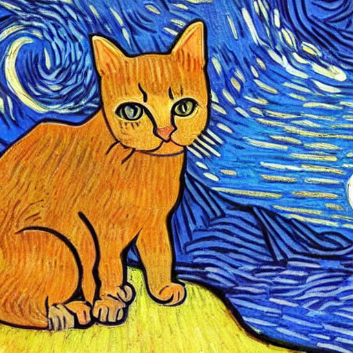

6.4 Diffusion from Scratch
Understanding Stable Diffusion from "Scratch"
Created Date: 2025-06-15
In this session , we walked through all the building blocks of Stable Diffusion, including:
Principle of Diffusion models.
Model score function of images with UNet model.
Understanding prompt through contextualized word embedding.
Let text influence image through cross attention.
Improve efficiency by adding an autoencoder.
Large scale training.
6.4.1 Playing with Stable Diffusion
It has many sections with loose order between them. You can:
Play with generating art from prompt.
See the effect of the parameters for generating process.
Visualizing the diffusion process and latents.
Looking under the hood of the sampling function.
Inspect the internal network architecture of the components of Stable Diffusion.
6.4.1.1 Loading Stable Diffusion
To run the code below, you need to install the diffusers library. You can do this by running:
pip install diffusers
import os
import numpy
import torch
import torch
from diffusers import StableDiffusionPipeline
from matplotlib import pyplotMake sure you have a GPU available, as Stable Diffusion requires significant computational resources. You can check if CUDA is available with:
assert torch.cuda.is_available(), "CUDA is not available. Please run on a machine with a GPU."Now, let's load the Stable Diffusion model. You will need to authenticate with the Hugging Face Hub to access the model weights. If you don't have an account, you can create one at Hugging Face .
pipe = StableDiffusionPipeline.from_pretrained(
"CompVis/stable-diffusion-v1-4",
revision="fp16",
torch_dtype=torch.float16,
use_auth_token=True
).to("cuda")Once the model is loaded, you can generate images from text prompts. The following code generates an image of a "lovely cat running in the desert in Van Gogh style, trending art." and displays it.
# Disable the safety checker for this example
def dummy_checker(images, **kwargs):
return images, [False] * len(images)
pipe.safety_checker = dummy_checker
prompt = "a lovely cat running in the desert in Van Gogh style, trending art."
image = pipe(prompt).images[0] # image here is in [PIL format](https://pillow.readthedocs.io/en/stable/)
# Now to display an image you can do either save it such as
os.makedirs("temp", exist_ok=True)
image.save(f"temp/lovely_cat.png")
pyplot.imshow(numpy.array(image)) # Convert PIL image to numpy array for display
pyplot.axis('off') # Hide axes
pyplot.show() # Display the image
Figure 1 - A Lovely Cat Generated by Stable Diffusion
By creating a torch.Generator object and setting its seed with .manual_seed(42), you ensure that the same sequence of random numbers is used each time the pipeline is run with this generator. This results in the same image being generated from the same prompt and other parameters.
generator = torch.Generator("cuda").manual_seed(42)
prompt = 'a sleeping cat enjoying the sunshine.'
image = pipe(prompt, generator=generator).images[0] # Generate image with a fixed seed
image.save(f"temp/sleeping_cat_seed.png")
pyplot.imshow(numpy.array(image)) # Convert PIL image to numpy array for display
pyplot.axis('off') # Hide axes
pyplot.show() # Display the image6.4.1.2 Generative Playground
6.4.1.3 Visualizing the Diffusion in Action
6.4.1.4 Write a Simple text2img Sampling Function
6.4.1.5 Image to Image Translation Playground
6.4.1.6 Write a Simple img2img Sampling Function
6.4.1.7 The Internal Structure of Model
6.4.2 Build Stable Diffusion U-Net Model
In previous section, we went over the various components necessary to make an effective diffusion generative model like Stable Diffusion.
As a reminder, they are:
Method of learning to generate new stuff (forward/reverse diffusion);
Way to link text and images (text-image representation model like CLIP);
Way to compress images (autoencoder);
Way to add in good inductive biases (U-net architecture + self/cross-attention);
In this section, you will implement pieces of each of the above, and by the end have a working Stable-Diffusion-like model.
In particular, you will implement parts of:
Basic 1D forward/reverse diffusion;
A U-Net Architecture for Working with Images;
The Loss Associated with Learning the Score Function;
An Attention Model for Conditional Generation;
An Autoencoder